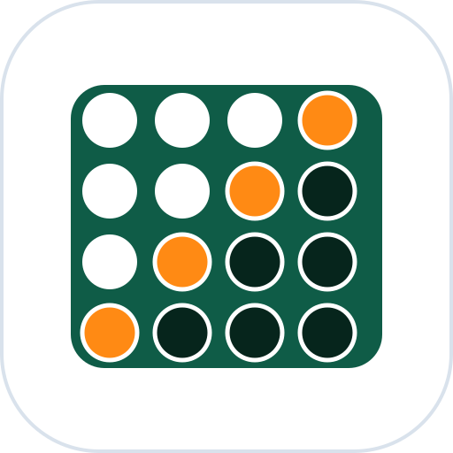

Vier gewinnt
Vier Steine in einer Reihe gewinnen.
So geht's
- Abwechselnd wirft jeder einen Stein in eine Spalte. Er fällt ganz nach unten.
- Wer zuerst vier Steine in einer Reihe hat – waagerecht, senkrecht oder schräg – gewinnt.

Vier gewinnt
Vier Steine in einer Reihe gewinnen.